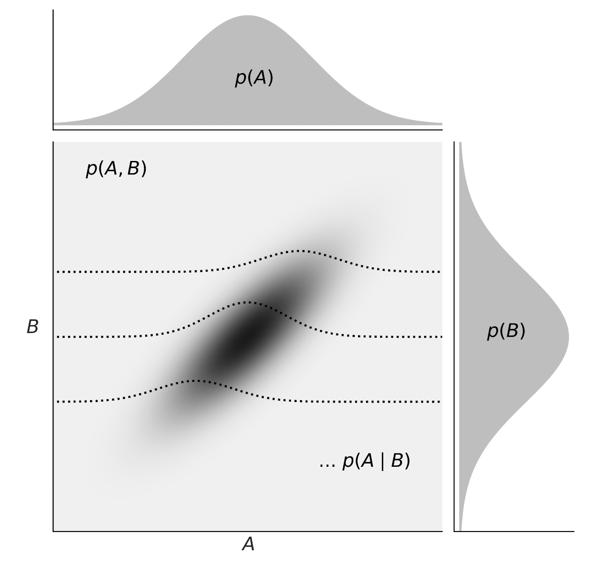

Probabilità congiunta#
La probabilità congiunta è la probabilità che due o più eventi si verifichino contemporaneamente. In questo capitolo verrà esaminato il caso discreto.
Preparazione del Notebook#
import numpy as np
import pandas as pd
Funzione di Probabilità Congiunta#
Dopo aver esplorato la distribuzione di probabilità di singole variabili casuali, che associa un unico numero reale ad ogni possibile risultato di un esperimento, si procede naturalmente all’estensione di questo concetto al caso di due o più variabili casuali.
Esempio: Lancio di Tre Monete Equilibrate#
Consideriamo l’esperimento del lancio di tre monete equilibrate. Lo spazio campione \(\Omega\) è dato da:
dove T rappresenta «testa» e C rappresenta «croce». Assumendo che i lanci siano indipendenti, ogni risultato nell’insieme \(\Omega\) ha la stessa probabilità di occorrenza, ovvero \(1/8\).
Definiamo le seguenti variabili casuali sullo spazio campione \(\Omega\):
\(X \in \{0, 1, 2, 3\}\) rappresenta il «numero di teste ottenute nei tre lanci».
\(Y \in \{0, 1\}\) indica se «la testa è stata ottenuta nel primo lancio» (1) o no (0).
La tabella seguente illustra lo spazio campione e le variabili casuali \(X\) e \(Y\), insieme alle rispettive probabilità:
\(\omega\) |
\(X\) |
\(Y\) |
\(P(\omega)\) |
|---|---|---|---|
\(\omega_1\) = TTT |
3 |
1 |
1/8 |
\(\omega_2\) = TTC |
2 |
1 |
1/8 |
\(\omega_3\) = TCT |
2 |
1 |
1/8 |
\(\omega_4\) = CTT |
2 |
0 |
1/8 |
\(\omega_5\) = CCT |
1 |
0 |
1/8 |
\(\omega_6\) = CTC |
1 |
0 |
1/8 |
\(\omega_7\) = TCC |
1 |
1 |
1/8 |
\(\omega_8\) = CCC |
0 |
0 |
1/8 |
Per ogni coppia \((x, y)\) definita su \(\Omega\), associamo una probabilità come segue:
\(P(X=0, Y=0) = P(\text{CCC}) = 1/8\),
e similmente per le altre coppie.
Le probabilità calcolate per tutte le possibili coppie \((X, Y)\) sono:
Queste probabilità compongono la distribuzione di probabilità congiunta delle variabili casuali \(X\) e \(Y\).
Definizione: Funzione di Probabilità Congiunta#
La funzione di probabilità congiunta di due variabili casuali \(X\) e \(Y\) associa a ogni coppia \((x, y)\) una probabilità \(P(X = x, Y = y)\).
Proprietà#
Una distribuzione di probabilità congiunta deve soddisfare:
\(0 \leq P(x_i, y_j) \leq 1\) per ogni coppia \((x_i, y_j)\),
\(\sum_{i} \sum_{j} P(x_i, y_j) = 1\), ovvero la somma delle probabilità su tutte le coppie deve essere 1.
Calcolo della Probabilità di Eventi Specifici#
Data la distribuzione di probabilità congiunta, possiamo determinare la probabilità di eventi definiti in termini delle variabili aleatorie \(X\) e \(Y\). Ad esempio, per trovare la probabilità che \(X + Y \leq 1\), sommiamo le probabilità di tutte le coppie \((x, y)\) che soddisfano questa condizione, ottenendo \(P(X+Y \leq 1) = 3/8\).
Funzioni di Probabilità Marginali#
La distribuzione marginale di un insieme di variabili casuali descrive la distribuzione di probabilità di queste variabili considerate singolarmente, indipendentemente dalle altre. La «marginalizzazione» è un processo che permette di ottenere la distribuzione di probabilità di una o più variabili casuali marginali sommando o integrando la distribuzione congiunta su tutte le possibili realizzazioni delle altre variabili casuali, ovvero quelle non considerate (e quindi «marginalizzate»).
Per esempio, data la distribuzione congiunta di due variabili casuali discrete \(X\) e \(Y\), la distribuzione marginale di \(X\), indicata come \(P(X=x)\), si calcola come:
dove \(P(X = x, Y = y)\) rappresenta la probabilità congiunta di \(X\) e \(Y\). Le distribuzioni marginali e congiunte di variabili casuali discrete sono frequentemente rappresentate in tabelle di contingenza. Si garantisce che le distribuzioni marginali siano normalizzate:
Per variabili casuali continue, la somma è sostituita dall’integrazione.
Esempio Pratico#
Prendiamo come riferimento l’esperimento del lancio di tre monete equilibrate descritto precedentemente. Per calcolare le probabilità marginali di \(X\) e \(Y\), sommiamo le probabilità congiunte su una dimensione. La probabilità marginale di \(X\), \(P_X\), si ottiene sommando le probabilità lungo le colonne per ciascun valore fisso di \(X\); analogamente, la probabilità marginale di \(Y\), \(P_Y\), si calcola sommando le probabilità lungo le righe per ciascun valore fisso di \(Y\).
La tabella seguente mostra la distribuzione di probabilità congiunta \(P(X, Y)\) e le probabilità marginali \(P(X)\) e \(P(Y)\):
\(x \setminus y\) |
0 |
1 |
\(P(x)\) |
|---|---|---|---|
0 |
1/8 |
0 |
1/8 |
1 |
2/8 |
1/8 |
3/8 |
2 |
1/8 |
2/8 |
3/8 |
3 |
0 |
1/8 |
1/8 |
\(P(y)\) |
4/8 |
4/8 |
1.0 |
Marginalizzazione per Variabili Casuali Continue#
Nell’ambito della statistica bayesiana, il concetto di marginalizzazione gioca un ruolo cruciale. Un esempio di equazione che emerge da questo processo è:
dove \(y\) e \(\theta\) sono variabili casuali continue, con \(y\) che rappresenta i dati osservati e \(\theta\) i parametri di un modello statistico. Questa equazione illustra come, in un contesto continuo, la marginalizzazione possa essere vista come l’estensione dell’approccio discreto a un continuum di valori per le variabili in esame.
Indipendenza tra Variabili Casuali#
L’indipendenza tra variabili casuali è un concetto fondamentale in statistica e probabilità, parallelo all’idea di indipendenza tra eventi. Due variabili casuali si considerano indipendenti quando l’informazione su una non altera in alcun modo la distribuzione di probabilità dell’altra. Questa sezione offre una formalizzazione dell’indipendenza tra due variabili casuali discrete, basata sulla loro distribuzione di probabilità congiunta.
Definizione di Indipendenza#
Due variabili casuali \(X\) e \(Y\), con una distribuzione congiunta, sono definite indipendenti se, e solo se, per ogni coppia di valori \((x, y)\) si verifica che:
In termini pratici, ciò significa che se \(X\) e \(Y\) sono variabili casuali discrete indipendenti, la loro distribuzione di probabilità congiunta è il prodotto delle rispettive distribuzioni di probabilità marginali. Se invece \(P_{X, Y}(x, y) \neq P_X(x) \cdot P_Y(y)\), le variabili non sono indipendenti e si dicono associate o dipendenti.
Questo concetto si applica anche alle variabili casuali continue, mantenendo la stessa logica: l’indipendenza si verifica quando la funzione di densità congiunta è il prodotto delle funzioni di densità marginali.
Associazione tra Variabili Casuali#
Quando due variabili casuali non sono indipendenti, si descrivono come associate o dipendenti. In questo contesto, è utile introdurre il concetto di covarianza (e correlazione) come misura del grado di associazione lineare tra due variabili casuali. La covarianza e la correlazione quantificano in che modo la variazione di una variabile è associata alla variazione dell’altra, fornendo un indice della loro interdipendenza lineare.
Riepilogando, l’indipendenza tra variabili casuali è un concetto chiave per comprendere le relazioni tra fenomeni aleatori. Riconoscere se due variabili sono indipendenti o associate è fondamentale per l’analisi statistica e per la modellazione di relazioni causali o di correlazione tra variabili.
Covarianza#
La covarianza è un parametro statistico che quantifica il grado e la direzione della relazione lineare tra due variabili casuali, \(X\) e \(Y\). In termini semplici, misura come le variazioni di una variabile si accompagnano a quelle dell’altra. Per esempio, considerando l’altezza e il peso di giraffe, scopriremmo che queste due misure tendono ad aumentare insieme, evidenziando così una covarianza positiva. La covarianza è denotata come \(Cov(X, Y) = \sigma_{xy}\).
Definizione di Covarianza#
La covarianza tra due variabili casuali \(X\) e \(Y\) è definita come:
dove \(\mathbb{E}[X]\) e \(\mathbb{E}[Y]\) rappresentano i valori attesi (o medie) di \(X\) ed \(Y\), rispettivamente.
In termini più espliciti, la covarianza può essere espressa come:
dove \(\mu_X\) e \(\mu_Y\) sono le medie di \(X\) ed \(Y\), e \(f(x, y)\) è la funzione di probabilità congiunta delle variabili.
Questa definizione mostra una stretta analogia con la varianza, che è la covarianza di una variabile con se stessa:
Inoltre, la covarianza può essere calcolata attraverso la relazione:
Dimostrazione#
La formula alternativa per la covarianza si dimostra come segue:
Esempio di Calcolo della Covarianza#
Consideriamo le variabili casuali \(X\) e \(Y\) con medie \(\mu_X = 1.5\) e \(\mu_Y = 0.5\). La covarianza di \(X\) e \(Y\) si calcola come:
Questo risultato si può ottenere anche dalla formula alternativa, calcolando prima \(\mathbb{E}(XY)\):
Allora, la covarianza tra \(X\) e \(Y\) è:
Un esempio con Python#
Per fare un esempio con Python, consideriamo l’esempio precedente nel quale \(X\) è il numero che si ottiene dal lancio di tre monete equilibrate e \(Y\) è il numero di teste al primo lancio. Troviamo \(Cov(X, Y)\).
Creiamo il prodotto cartesiano che si ottiene per tutti i possibili valori \(X\) e i possibili valori \(Y\).
c3 = np.arange(0, 4)
c1 = np.arange(0, 2)
sample = [(i, j) for i in c1 for j in c3]
sample
[(0, 0), (0, 1), (0, 2), (0, 3), (1, 0), (1, 1), (1, 2), (1, 3)]
Il primo numero di ogni coppia rappresenta il valore di \(Y\), mentre il secondo numero è il valore di \(X\). Come abbiamo visto in precedenza, però, quete coppie di valori \(X, Y\) non hanno tutte la stessa probabilità di verificarsi. Infatti, la probabilità che ciascuna coppia \(X, Y\) si osservi è data, in sequenza, dai valori 1/8, 2/8, 1/8, 0, 0, 1/8, 2/8, 1/8. Questi valori rappresentano la distribuzione di massa di probabilità congiunta delle variabili casuali \(X\) e \(Y\). Possiamo quindi applicare l’eq. eq-cov-def-rv:
res = []
pmf = np.array([1 / 8, 2 / 8, 1 / 8, 0, 0, 1 / 8, 2 / 8, 1 / 8])
for i in range(8):
res.append((sample[i][0] - 0.5) * (sample[i][1] - 1.5) * pmf[i])
sum(res)
0.25
La covarianza tra \(X\) e \(Y\) è dunque uguale a 0.25.
Correlazione#
Mentre la covarianza fornisce un’indicazione della tendenza di due variabili casuali a variare insieme, essa è influenzata dalle unità di misura delle variabili, rendendo difficile valutare l’intensità della loro relazione lineare. Per ovviare a questo, si utilizza la correlazione, che normalizza la covarianza attraverso le deviazioni standard delle variabili, offrendo così una misura standardizzata dell’associazione lineare tra di esse.
Definizione#
Il coefficiente di correlazione tra due variabili casuali \(X\) e \(Y\), denotato come \(\rho(X,Y)\) o \(\rho_{X,Y}\), è definito come:
dove \(\mathbb{V}(X)\) e \(\mathbb{V}(Y)\) rappresentano le varianze di \(X\) e \(Y\), rispettivamente.
Il coefficiente di correlazione \(\rho_{xy}\) è un valore adimensionale, ovvero non dipende dalle unità di misura delle variabili, e varia nell’intervallo \(-1 \leq \rho \leq 1\).
Proprietà#
Covarianza con una Costante: La covarianza tra una variabile aleatoria \(X\) e una costante \(c\) è sempre nulla: \(Cov(c, X) = 0\).
Simmetria: La covarianza è simmetrica: \(Cov(X,Y) = Cov(Y,X)\).
Intervallo di Correlazione: Il coefficiente di correlazione \(\rho\) varia tra -1 e 1: \(-1 \leq \rho(X,Y) \leq 1\).
Indipendenza dalle Unità di Misura: La correlazione è indipendente dalle unità di misura: \(\rho(aX, bY) = \rho(X,Y)\) per ogni \(a, b > 0\).
Relazione Lineare Perfetta: Se \(Y = a + bX\) è una funzione lineare di \(X\), allora \(\rho(X,Y) = \pm 1\), a seconda del segno di \(b\).
Covarianza e Costanti: La covarianza tra \(X\) e \(Y\), ciascuna moltiplicata per una costante, è \(Cov(aX, bY) = ab \, Cov(X,Y)\).
Varianza della Somma/Differenza: \(\mathbb{V}(X \pm Y) = \mathbb{V}(X) + \mathbb{V}(Y) \pm 2Cov(X,Y)\).
Covarianza e Somma di Variabili: \(Cov(X + Y, Z) = Cov(X,Z) + Cov(Y,Z)\).
Varianza di una Somma di Variabili Aleatorie: Per variabili aleatorie \(X_1, \dots, X_n\), si ha \(\mathbb{V}(\sum_{i=1}^n X_i) = \sum_{i=1}^n \mathbb{V}(X_i) + 2\sum_{i<j} Cov(X_i, X_j)\).
Covarianza e Somme di Prodotti: \(Cov(\sum_{i=1}^n a_i X_i, \sum_{j=1}^m b_j Y_j) = \sum_{i=1}^n \sum_{j=1}^m a_i b_j Cov(X_i, Y_j)\).
Indipendenza e Covarianza di Somme: Se \(X_1, X_2, \dots, X_n\) sono indipendenti, allora \(Cov(\sum_{i=1}^n a_i X_i, \sum_{j=1}^n b_j X_j) = \sum_{i=1}^n a_i b_i \mathbb{V}(X_i)\).
Incorrelazione#
Due variabili casuali \(X\) ed \(Y\) si dicono incorrelate, o linearmente indipendenti, se la loro covarianza è nulla:
equivalente a dire che \(\rho_{XY} = 0\) e \(\mathbb{E}(XY) = \mathbb{E}(X)\mathbb{E}(Y)\).
Questa condizione indica una forma di indipendenza più debole rispetto all’indipendenza stocastica. Tuttavia, \(Cov(X, Y) = 0\) non implica necessariamente che \(X\) ed \(Y\) siano stocasticamente indipendenti.
Esempio#
Consideriamo una distribuzione di probabilità congiunta di due variabili aleatorie, \(X\) e \(Y\), definita come:
Questo implica che le variabili aleatorie \(X\) e \(Y\) assumono valori specifici con probabilità uniforme solo per determinate coppie \((x, y)\) e zero in tutti gli altri casi.
Distribuzioni Marginali
La distribuzione marginale di \(X\) si ottiene sommando le probabilità congiunte su tutti i possibili valori di \(Y\), e viceversa per \(Y\). Le distribuzioni marginali risultano essere:
Per \(X\):
\[\begin{split} f_X(x) = \left\{ \begin{array}{ll} \frac{1}{4} & \text{per } x=0, \\ \frac{1}{2} & \text{per } x=1, \\ \frac{1}{4} & \text{per } x=2. \end{array} \right. \end{split}\]Per \(Y\):
\[\begin{split} f_Y(y) = \left\{ \begin{array}{ll} \frac{1}{4} & \text{per } y=-1, \\ \frac{1}{2} & \text{per } y=0, \\ \frac{1}{4} & \text{per } y=1. \end{array} \right. \end{split}\]
Medie e Varianze
Calcoliamo ora le medie e le varianze di \(X\) e \(Y\):
Media di \(X\):
\[ \mathbb{E}(X) = 0 \cdot \frac{1}{4} + 1 \cdot \frac{1}{2} + 2 \cdot \frac{1}{4} = 1. \]Varianza di \(X\):
\[ \mathbb{V}(X) = \left(0^2 \cdot \frac{1}{4} + 1^2 \cdot \frac{1}{2} + 2^2 \cdot \frac{1}{4}\right) - \mathbb{E}(X)^2 = \frac{3}{2} - 1 = \frac{1}{2}. \]Media di \(Y\):
\[ \mathbb{E}(Y) = (-1) \cdot \frac{1}{4} + 0 \cdot \frac{1}{2} + 1 \cdot \frac{1}{4} = 0. \]Varianza di \(Y\):
\[ \mathbb{V}(Y) = \left((-1)^2 \cdot \frac{1}{4} + 0^2 \cdot \frac{1}{2} + 1^2 \cdot \frac{1}{4}\right) - \mathbb{E}(Y)^2 = \frac{1}{2}. \]
Covarianza tra X e Y
La covarianza si calcola come:
dove \(\mathbb{E}(XY)\) si trova sommando il prodotto delle coppie di valori \((x, y)\) per la loro probabilità congiunta:
Di conseguenza, la covarianza tra \(X\) e \(Y\) è zero:
Conclusioni
Sebbene \(X\) e \(Y\) siano incorrelate (covarianza nulla), ciò non implica la loro indipendenza. L’indipendenza richiede che la funzione di probabilità congiunta si possa esprimere come il prodotto delle funzioni di probabilità marginali per ogni \(x\) e \(y\), condizione che non si verifica in questo caso. Quindi, nonostante l’assenza di correlazione, \(X\) e \(Y\) non sono indipendenti, dimostrando che l’incorrelazione non garantisce l’indipendenza.
Variabili continue#
Consideriamo ora le distribuzioni di densità. Nella figura successiva, tratta da Martin [Mar24], vediamo una rappresentazione della relazione tra la probabilità congiunta \(p(A,B)\), le probabilità marginali \(p(A)\) e \(p(B)\), e le probabilità condizionali \(p(A \mid B)\).
{kind=link}
Probabilità congiunta \(p(A,B)\): rappresenta la probabilità che A e B assumano certi valori contemporaneamente. Per le variabili continue, questa è data dall’integrazione della funzione di densità congiunta su un’area o volume di interesse.
Probabilità marginale \(p(A)\) e \(p(B)\): è la probabilità di osservare un particolare valore di A (o B) indipendentemente dal valore di B (o A). Si ottiene integrando la funzione di densità congiunta sull’intero intervallo di valori dell’altra variabile.
Probabilità condizionale \(p(A \mid B)\): esprime la probabilità di A dato B. Si calcola dividendo la probabilità congiunta per la probabilità marginale di B, applicando la definizione di probabilità condizionale anche nel contesto continuo.
La transizione dal trattamento delle variabili discrete a quello delle variabili continue richiede un cambiamento di strumenti matematici da somme ad integrali, ma i concetti fondamentali di probabilità congiunta, marginale e condizionale rimangono applicabili.
Commenti e considerazioni finali#
In alcune situazioni, ogni singolo elemento di una popolazione può essere associato a diverse variabili casuali. Ad esempio, consideriamo l’elenco di tutti gli studenti iscritti a un’università e immaginiamo di selezionare uno studente a caso per misurare la sua altezza e il suo peso. In questo caso, ogni individuo della popolazione è associato a due variabili casuali, l’altezza e il peso. Quando si hanno due o più variabili casuali associate ad ogni elemento di una popolazione, è possibile studiare la distribuzione congiunta di tali variabili casuali. In questo capitolo abbiamo esaminato come rappresentare la distribuzione di massa di probabilità congiunta di due variabili casuali discrete e come ottenere le distribuzioni marginali delle due variabili. Inoltre, abbiamo discusso i concetti di incorrelazione e indipendenza.
Informazioni sull’Ambiente di Sviluppo#
%load_ext watermark
%watermark -n -u -v -iv -w -m
Last updated: Sun Jun 16 2024
Python implementation: CPython
Python version : 3.12.3
IPython version : 8.25.0
Compiler : Clang 16.0.6
OS : Darwin
Release : 23.4.0
Machine : arm64
Processor : arm
CPU cores : 8
Architecture: 64bit
numpy : 1.26.4
pandas: 2.2.2
Watermark: 2.4.3